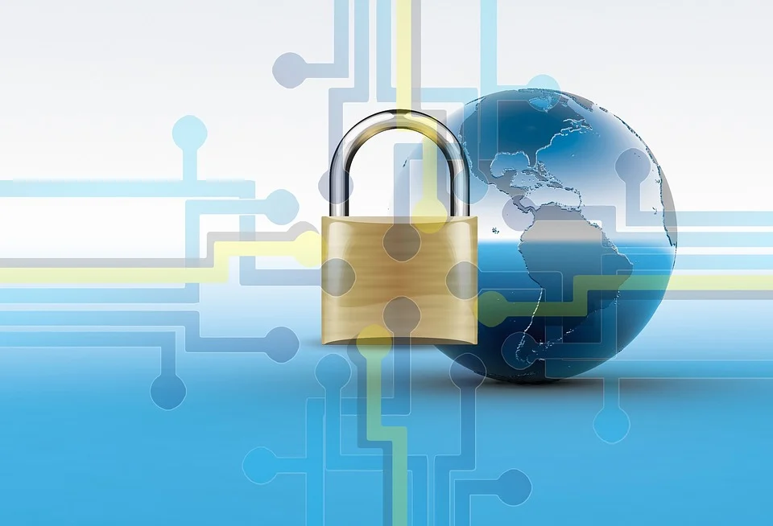

Cifrado AES-256
Advanced Encryption Standard (AES) es uno de los algoritmos de cifrado más utilizados y seguros actualmente disponibles. Es de acceso público, y es el cifrado que la NSA utiliza para asegurar documentos con la clasificación "top secret". Su historia de éxito se inició en 1997, cuando el NIST (Instituto Nacional de Estándares y Tecnología) comenzó oficialmente a buscar un sucesor al envejecimiento cifrado estándar DES. Un algoritmo llamado "Rijndael", desarrollado por los criptografistas belgas Daemen y Rijmen, sobresalía tanto en seguridad como en rendimiento y flexibilidad.
Apareció en la cima de varios competidores y se anunció oficialmente el nuevo estándar de cifrado AES en 2001. El algoritmo se basa en varias sustituciones, permutaciones y transformaciones lineales, cada una ejecutada en bloques de datos de 16 bytes - por lo tanto el término blockcipher. Esas operaciones se repiten varias veces, llamadas "rondas". Durante cada ronda, una clave circular única se calcula a partir de la clave de cifrado y se incorpora en los cálculos. Basado en la estructura de bloques de AES, el cambio de un solo bit, ya sea en la clave, o en el bloque de texto sin cifrado, da como resultado un bloque de texto cifrado completamente diferente - una ventaja clara sobre los cifrados de flujo tradicionales. La diferencia entre AES-128, AES-192 y AES-256 finalmente es la longitud de la clave: 128, 192 o 256 bits - todas las mejoras drásticas en comparación con la clave de 56 bits de DES. A modo de ilustración: El agrietamiento de una clave AES de 128 bits con un superordenador de última generación tomaría más tiempo que la presunta edad del universo. Y Boxcryptor incluso utiliza claves de 256 bits. Hasta el día de hoy, no existe un ataque factible contra AES. Por lo tanto, AES sigue siendo el estándar de cifrado preferido para los gobiernos, bancos y sistemas de alta seguridad en todo el mundo.